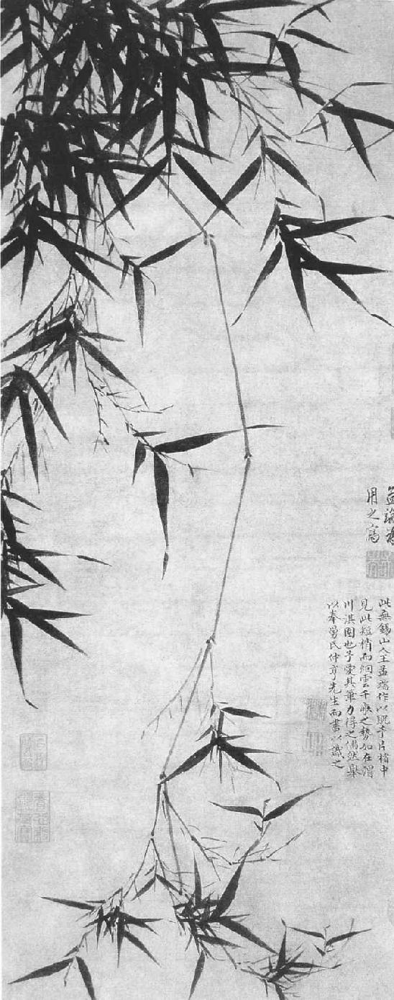
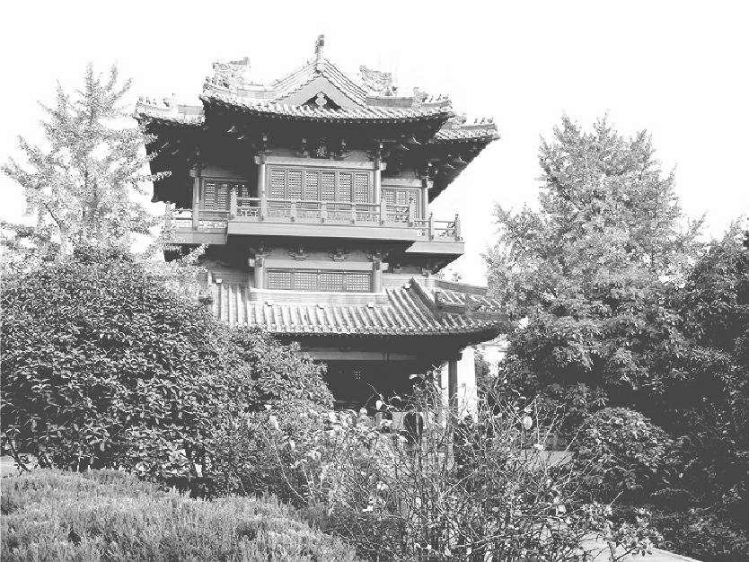

第十三章 黄楼
甚至才高如苏东坡，真正的生活也是由四十岁才开始。他现在就要进入他的徐州时期，也就是他的“黄楼”时期。苏东坡现在突然露出了他的本面目。因为这是他人生中首次以行动为人所知，做事，兴建工程，忙于公众活动，从今以后他的生活都是具有这些特色的。过去在杭州，他始终充任辅佐官员，始终不能从事具有建设性的重要工作，在密州虽然身为太守，但是地方贫穷而偏远，也无由一展其行政才能。后来，他在被迫之下，暂时退隐，在政坛上韬光养晦。此后，一个充实、完满、练达、活跃、忠贞的苏东坡出现了，这才是我们所知道、百姓所爱戴的苏东坡，也是温和、诙谐的百姓的友人兼战士的苏东坡——一个具有伟大人格的伟大人物。但是在他被捕遭受流放之前，他以徐州太守所表现的政绩已经证明了苏东坡这个行动人物作为行政官员，也是个干练之才。
在熙宁九年（一〇七六年）年底，苏东坡又调离了密州，改派至山西省西南端的河中府任职。次年正月，他路经济南入京，当时子由及其家室正在济南。子由不在，因为政局正在酝酿变化。这时，王安石、吕惠卿、曾布、邓绾已先后失势，王安石复相后，又再度罢相，无人预知下一步会出现何等局面。
子由为人沉静而果断。苏东坡过去一直不断上书论税政，论征兵法，请皇帝废止所得税。但是子由过去一直沉默，现在大概认为时机已至，可以放手一击，以求根本改变国策。王安石在十月已然最后失势，子由这时来不及等待兄长，已经携带改革政治的重要表章先行入京了。他的家眷仍住在济南，苏东坡到时，只有三个侄子站在城中雪地里迎接。那天晚上，大开盛宴，两家久别重聚，格外欢喜。济南为一大城市，比起密州，新鲜有趣，东坡停留了约一个月光景，直到熙宁十年（一〇七七年）二月十日，两家才到黄河岸，离开封不远了。子由出城到离北岸三十里处迎接，兄弟二人在雪地途中亲热相处了好几天。子由告诉兄长调到河中府的任命已经取消，改任徐州太守。
他们到达京都时，遇到一件怪事。他们到了陈桥门，门吏告诉苏东坡不许他进城。这件事他弟弟子由曾经记录下来，只是始终没有令人满意的解释。我不相信这是皇帝的意思。也许是时局酝酿巨变，某些官员不愿让苏东坡见到皇帝。据我所知，皇帝也许根本不知道有这样一条命令。兄弟二人只好折回，住在好友范镇家，是在东外城。
这时，苏东坡的长子苏迈已经十八岁，到了成家的年龄。钻研历史的学者始终考证不出那位小姐是谁。我猜想他娶的是范镇的一个孙女。在苏东坡和范镇父子的通信里，他屡次称范家为姻亲。苏范两家到底是何等姻亲关系，尚待解释。范镇也是四川人，那时苏东坡正住在范家。随后两年，苏东坡帮助子由物色了两个佳婿，把子由的两个女儿嫁出去。一个是王适——“仙妻”传说主角王迥（字子高）的弟弟，另一个是画竹名家文与可的儿子。
儿子苏迈成婚后，苏东坡携眷东行，到徐州上任。子由也携眷到商丘任通判。他把家眷在张方平家安顿好之后，又与兄长东赴徐州，在徐州和兄长同住了三个月，才回到眷属那里。
徐州不仅是个大城市，地控鲁南，一向为军事要冲。在过去各朝代，徐州四面皆有战事，今日仍位于津浦陇海两铁路交会之处。徐州离一个地区近在咫尺，此地区在数十年后成为一个盗匪巢穴，因《水浒传》的渲染而出名。徐州位于河畔，南部高山耸立，下有深水急流，在城边流过。当地出产上等花岗岩、煤、铁，苏东坡时已开始开采，因此徐州也以产刀剑著称。苏东坡喜爱此地的自然风光，鱼与螃蟹也种类繁多，故称之为“小住胜地”。
《淇渭图》 王绂 明 台北故宫博物院藏
文同（字与可）特别擅长画竹子，有“墨竹大师”之称。他说自己只不过把心中的竹子画出来罢了，“胸有成竹”这个成语就是来源于他画竹的故事。此图画倒挂竹一枝，姿态秀妍，其墨竹画法显然继承了文同的画竹传统，着重表达萧散清逸的意韵。
在八月二十一日，苏东坡到任三个月之后，洪水到了徐州。王安石以前曾设法疏浚过黄河水道，但是空花了五十万缗，工程竟归失败，负责工程的人畏罪自尽。黄河现在是在徐州以北约五十里处向东方决口，水势开始漫延，淹没了几百方里。水到徐州城边时，被城南的高山所阻，于是继续高涨，到了九月，水深达到两丈九尺。水高一度超过了徐州城内的街道。苏东坡奋不顾身，抢救城池，有几十天不回家过夜，住在城墙上的棚子里，监督加固外圈的城墙。富有之家纷纷逃难，苏东坡在城门口劝阻他们，以免引起人心惊惶。他说：“我不走，你们最好也不要走。”这样把大家劝回去。此处不是细谈苏东坡建筑工程天才之所，不过也得说他是亲自参与了防堵工程的数字计算。在盘旋滚转的洪水势将越过东南外城墙时，他正在忙于加固城基和增加城高。防水工程长九千八百四十尺，十尺高，二十尺厚。完成这项工程，需要数千人之众。扑哧扑哧在泥里跋涉，他亲身到军营去见指挥官。因为禁卫军直接受皇帝命令，苏东坡恳求他们协助。指挥官欣然应允，他说：“大人都亲自监工，我们自然应当尽力。”同时在徐州北方也正在准备把洪水引入黄河旧水道——黄河在中国历史上曾改道多次。洪水威胁徐州城四十五天。在十月初五，黄河又回到旧水道，往东在靠近海州处入海，洪水才开始撤退。
百姓欢天喜地，感谢全城得救。但是苏东坡对临时的堤防感到不满，附以详细数字说明，修表呈奏朝廷，请求拨款，重建石头城墙，以防患于将来。空等好久之后，苏东坡修改了原定的计划，建议改用坚固的木材加固堤防，不再用石头。皇帝对他的成就特颁圣旨嘉许，在次年二月，朝廷拨予苏东坡三万余钱、一千八百余石米粮、七千余名员工，在城东南建筑了一条木坝。在外围城墙上，由于苏东坡喜爱建筑，他兴工建筑了一座楼，一百尺高，名之为黄楼。后来“黄楼”一词成了苏东坡在徐州所作诗歌总集的名称，正如他在密州建筑的超然台，成了他在密州所写诗集的名称一样。
黄楼之所以如此命名，是因为对古老中国的宇宙论的信念而起。根据中国的宇宙论，宇宙中万物由金、木、水、火、土五行所构成。五行中每一行都代表一种性质，如同坚硬、生长、流动、热、重等，这些性质都具有一种宇宙的意义，不但用以指物质的宇宙，也用以指生命的功能与人的个性行为，也可以用于男女的婚配。生命离不开五行的交互作用，比如相生相克。每一行皆有其颜色，正好象征那种元素的性质。说也奇怪，黄代表土，黑代表水，黄土因具有吸水力量，所以可以克服水。黄楼之命名即含有防水之意。
神宗元丰元年（一〇七八年）九月初九，黄楼举行盛大落成典礼。苏东坡是由衷地欢喜。老百姓得免于水灾，建堤建楼费了半年工。黄楼属于全城的居民，分明是将来防洪的保障。落成仪式举行时，全城万人空巷，前来参加。一看黄楼耸立于东门之上，高一百尺，下面立有五十尺高的旗杆。楼的形状犹如一座宽广的佛塔。大家一齐登楼，一览四周的景物。那天早晨，偏偏浓雾笼罩。他们往窗外瞭望时，只听见下面过往船只桨橹摇动碾轧作响的声音，大家觉得犹如置身于海船之上。不久，雾散日出，可以看见远处渔村错落，在巉岩嵯峨的山峰之下，有六七个庙宇罗列其间。老人觉得寒冷，苏东坡请他们先喝几杯热酒。往近处看，在南方，看见一个高台，以往用为赛马之地，今已建成一座寺院。由那座庙起，一道一里长的新堤防顺着东城墙向北伸展。他们可以听到远处陆洪和百步洪波涛澎湃之声，与近处下面的鹅鸭之声相错杂。最后，摆设盛筵，款待来宾，有大乐队奏乐。
苏东坡写了一篇文章记此盛事，刻之于石，以垂久远。那块石碑也经历非凡。后来苏东坡遭朝廷流放，所有带苏东坡名字的石碑都奉命毁坏，当时徐州太守只把这块石碑投在附近的护城河里。约十年之后，老百姓已然忘记了禁令，而皇家也在搜集苏东坡的墨迹手稿，当地另一位太守把此石碑打捞上来，在夜里暗中把那碑文拓了几千份。此事过后，那个太守突然向诸同僚宣布道：“为何我竟会忘记！禁止苏东坡的碑文法令尚未取消，这个碑文还在，应当毁坏才是。”自然在石碑毁坏之后，那碑的拓本的价钱立刻高涨，那位太守名叫苗仲先，发了一笔大财。
黄楼 建筑 1988年
在徐州市区古黄河畔，矗立着一座双层飞檐的仿古高楼。这就是1988年修复的黄楼。历史上的黄楼是九百年前徐州知州苏轼率领徐州军民战胜洪水之后，于宋神宗元丰元年（1078年）八月在徐州城东门之上建造的。因为土能克水，所以涂上黄土，取名黄楼。
苏东坡现在名气甚大，受人欢迎，不仅是因为治河成功，也因为他十分关心囚犯的健康和福利，这是当时为太守者所绝无仅有的。他亲身视察监狱，并指定医生为囚犯治病。当时有一条法律，凡太守鞭打犯人致死者，太守受罚，但是苏东坡指出，犯人因病致死或照顾不善而死，则无人过问。因为犯人并非别人，也是一般的老百姓，因此犯人的家属对苏东坡非常感激。
有些小事很容易做，只要人想到去做，但是只有苏东坡肯去做。比如说，他看见很多逃兵沦落为盗匪，因为有一条荒谬的法令，凡是低级军士因公出差，官家不发予旅费，等于是逼良为盗。他自己改革这项陋规。他只要每年节省下几百缗钱，就可以够用。他严禁军中赌博、饮酒。在“上皇帝书”中他指出当地军队“练熟技艺，等地为诸郡之冠，陛下遣敕使按阅，所具见也”。
苏东坡今名日大，以中土鸿儒之冠为远近所知。欧阳修去世之后，文坛盟主之名即降到苏东坡头上。文人儒生皆以“夫子”呼之。他以前曾遇见他那“苏门四学士”之中的两个，在淮阳与张耒相识，在杭州附近结识晁补之。另外那两个是秦观和黄庭坚，秦黄二人后来成为宋代有名的诗人、词人，而今请求列在苏东坡的门下。五短身材的李常春天曾去拜访苏东坡，屡次谈到秦观，并拿秦观的词给东坡看。由于李常的介绍，秦观那年夏天曾去拜谒过苏东坡。秦观这位风流潇洒的词人，据野史说曾娶过苏东坡的小妹。秦观尚未应科举考试，还没有功名，但是年轻，文采风流，有不少的女友。后来秦观死时，曾有一歌妓为爱他寻了短见。他的词清新柔媚，如春日的黄鹂。秦观见苏东坡时说：“我独不愿万户侯，唯愿一识苏徐州。”他把苏东坡比作“天上麒麟”，又向苏东坡说：“不将俗物碍天真，北斗已南能几人？”
黄庭坚日后成了江西诗派的鼻祖，他与秦观又不相同，他沉默寡言，有学者风，他没去拜访苏东坡，但是写了两首诗，以万分谦逊的语气毛遂自荐，将苏东坡比之为高崖的青松，自己则比为深谷里的小草，希望将来能和青松比高。苏东坡以前曾看过黄庭坚的诗，他说黄庭坚的诗内容充实而深厚，诗思高旷，“数百年来未之见也”。他回黄庭坚的信说：“今者辱书词累幅，执礼恭甚，如见所畏者，何哉？轼方以此求交于足下，而惧其不可得。”苏门四学士中，庭坚年最长，在当时人常以苏黄并称。苏东坡去世后，黄山谷遂成为当代最伟大的诗人，人也是把他和苏东坡相提并论的，但是黄庭坚终生以苏门弟子自居。黄庭坚后来还是由苏东坡最亲近的朋友引荐的，因为黄庭坚是李常的外甥、孙觉的女婿。
九月间，另一个人来看苏东坡，后来他在朝廷审问苏东坡的案件时也深受牵连。他就是王巩，为人又是另一型。他是宰相之孙，出游之时，携一整车家酿美酒相随，因为他不肯饮酒肆所沽之酒。他随身有三个爱妾：英英、盼盼、卿卿，一齐来到徐州。苏东坡对他的爱妾开玩笑，在他那《百步洪》诗前的序言中，描写王巩携带梨窝美女下险滩，自己则身披羽氅立身黄楼高处，俯眺她们漂浮水面，自己望之若神仙，或如李太白再临人世。这时，有第四个重要人物在苏东坡生活中出现，就是诗僧参寥，大概是由秦观介绍的。奇怪的是，苏东坡在杭州的三年内，参寥住在附近一个城市，居然苏东坡从未听说过他。参寥为一大诗人，道德崇高，不慕虚名。他只是在遥远之处观察苏东坡而心怀羡慕。由现在起，参寥便成为苏东坡一生的密友了。
在那年的中秋节，我们也许可以把苏东坡看得更近、更清楚一些。八月十二，他得了一个孙子。中秋之夜，他微感不适，稍感寂寞。过了六天，他接到子由写的中秋诗，他也写了一首诗，叙述如何度的中秋节：
明月未出群山高，瑞光万丈生白毫。 一杯未尽银阙涌，乱云脱坏如崩涛。 谁为天公洗眸子，应费明河千斛水。 遂令冷看世间人，照我湛然心不起。 西南火星如弹丸，角尾奕奕苍龙蟠。 今宵注眼看不见，更许萤火争清寒。 何人舣舟临古汴，千灯夜作鱼龙变。 曲折无心逐浪花，低昂赴节随歌板。 青荧灭没转山前，浪飐风回岂复坚。 明月易低人易散，归来呼酒更重看。 堂前月色愈清好，咽咽寒螀鸣露草。 卷帘推户寂无人，窗下咿哑惟楚老。 南都从事莫羞贫，对月题诗有几人？ 明朝人事随日出，恍然一梦瑶台客。
那时，苏东坡为整个学术界所爱戴，所尊敬，所景仰。那年九月底，在黄楼有一个盛大的集会。苏东坡坦然谈笑，轻松愉快，极为众人所喜爱。只因为他深得众望，他之被捕与审判才轰动一时。